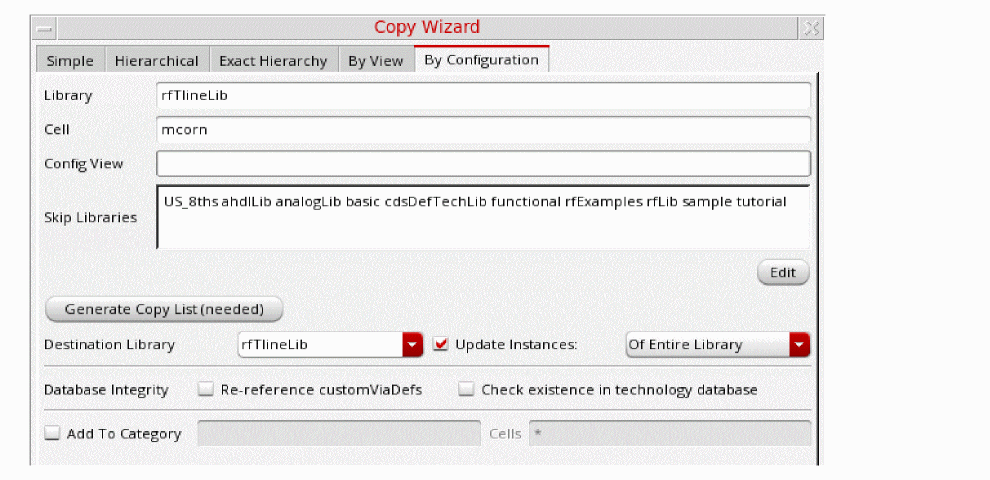

Copying Specific Cells in a Configuration Using the Copy Wizard
To copy cells in a configuration file to another library:
- Select the item you want to copy.
-
Choose Edit – Copy Wizard.
The Copy Wizard form appears. -
Select the By Configuration tab.
- The selected library name appears in the Library field.
- If you selected a cell, the cell name appears in the Cell field.
- If you selected a configuration view, the view name appears on the Config View field.
You can change any or all of these values. - If the Cell field is empty, type a valid cell name.
-
If the Config View field is empty, type a valid configuration view name.
In the Skip Libraries field, add or remove names of any libraries whose configuration you want to skip or to copy into the destination library. Alternatively, click the Edit button to open the Skip Libraries Editor dialog box and select the libraries to skip.
Configuration views in the libraries named in the Skip Libraries field are not copied and continue to reference their original library. You might want to skip libraries such as reference libraries of contacts, vias, and so on. Use theskipLibsTextenvironment variable to include the list of libraries in the Skip Libraries field. -
Click Generate Copy List.
The configuration views to copy appear in the copy list. By default, all items are selected for copying. - In the Destination Library field, type or select a new destination library name to copy the selected configuration views to a different library.
- Select the Update Instances check box and select one the required option from the drop-down list.
- Select the options in the Database Integrity field if you want to update technology data in the destination library after the copy command is completed.
- Click OK.
Library Manager copies the cells in the copy list to the destination library. If the destination library is the same as the top library, Library Manager copies the cells or views to the new names you specified.
If the destination library does not already exist, the New Library form appears, where you can specify a location and design management option for the new library.
If the Library Manager cannot open or read the configuration file, check the file permissions on the files making up the configuration or check the configuration using the Hierarchy Editor.
Related Topics
Copy Wizard Form (By Configuration)
Adding a Copied Cell to a Category
Selecting Items for Copying in the Copy Wizard
Viewing and Changing File Permissions
Return to top